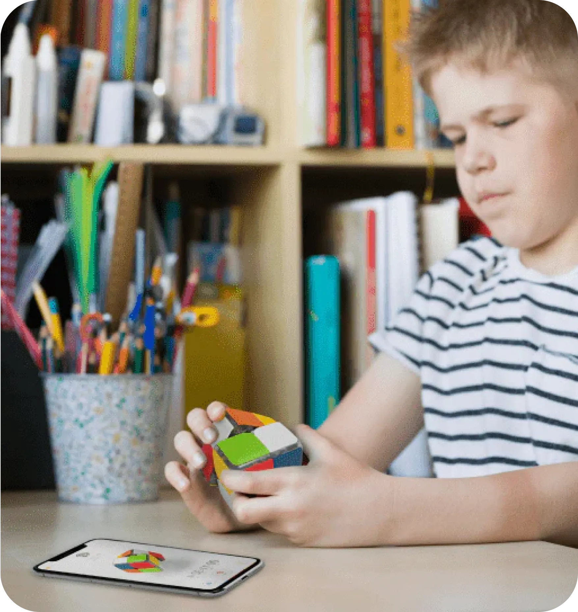
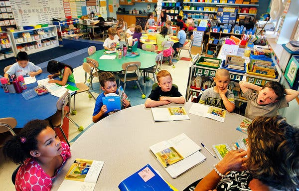
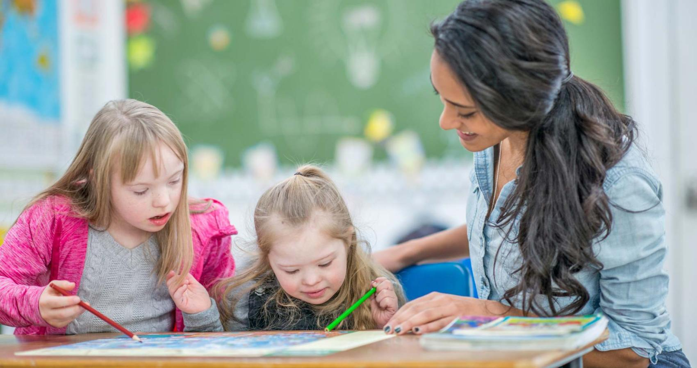
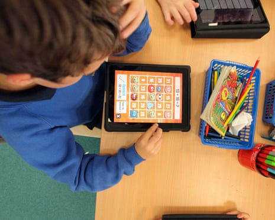

التوحد اختلاف في النمو العصبي يؤثر في طريقة التواصل والتفاعل مع الآخرين، وقد يؤثر في طريقة التعلم أيضًا. وتختلف قدرات واحتياجات الأطفال من طفل لآخر.
بالفهم والصبر والدعم، نقدر نساعد كل طفل يكتشف إمكانياته ويتعلم بطريقته الخاصة. وتشير التقديرات إلى أن حوالي 62 مليون شخص حول العالم لديهم التوحد، مما يؤكد أهمية توفير الدعم والفرص التعليمية المناسبة لهم


برج العرب – الإسكندرية
يقدم خدمات تأهيلية متنوعة لمساعدة الأطفال والأشخاص ذوي الإعاقة على تنمية قدراتهم ومهاراتهم.

عين شمس – القاهرة
يضم خدمات ومؤسسات متخصصة في رعاية وتأهيل الأشخاص ذوي الإعاقة.

المنصورة – الدقهلية
يقدم خدمات التأهيل الاجتماعي ومساعدة الأشخاص ذوي الإعاقة على تطوير مهاراتهم.